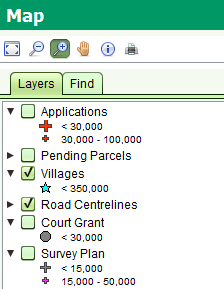

The Layers tab identifies the layers of geospatial data that can be displayed in the map. You can show or hide these layers by checking or clearing the checkbox next to the layer name.

SOLA Map Viewer Layers Tab
By clicking the triangle beside each layer name you can also see the symbology used to illustrate the geospatial data at different map scales. For example, when the map scale is below 30,000, Application points will be illustrated with a large red cross. Between 30,000 and 100,000 Application points will be illustrated with a small red cross. For map scales greater than 100,000, Application points will not be shown. Using the map scale to control the layer symbology ensures the map does not become overly crowded with detail which might otherwise impair navigation or comprehension of the information displayed by the map.
The layers available for SOLA Samoa include
|
Points that indicate the approximate location of applications that have been lodged in SOLA. Application points can be created using the Map Points tab when capturing details for a new application. |
|
New parcels that have been created by a survey subdivision or amalgamation. These parcels remain pending until the application that created them is approved. |
|
Points that indicate the approximate location of villages. |
|
Lines that indicate the location and names of roads. |
|
Illustrates the size and location of roads. |
|
Illustrates the Flur boundaries. |
|
Points that indicate the approximate location of court grants. |
|
Points that indicate the approximate location of survey plans. |
|
Points that indicate the approximate location of the Samoan districts. |
|
Points used to indicate the approximate location of the 14 islands of Samoa. |
|
Indicates the locations used for record sheets. |
|
This layer shows parcels that have been subdivided or amalgamated into new parcels, but still have current title (i.e. folio) references. |
|
Illustrates the location of current parcel nodes. |
|
Illustrates the underlying parcel(s) of a Unit Title Development |
|
Illustrates the location of current parcels |
|
Used to display the official parcel area in using both metric and imperial measurements. |
|
Illustrates the location of current hydro parcels such as streams, rivers, lakes and sea. |